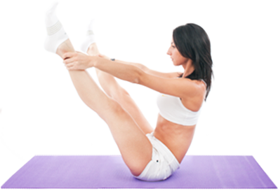
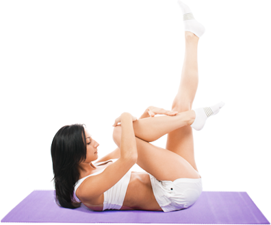

Все о пилатесе – лучшие материалы Интернета в одном разделеЧто такое пилатес?Что такое пилатес знать обязательно поскольку сегодня он просто безумно популярен. Вдумайтесь, в США работает около 1600 студий, в Англии более 500, в 2003 году в Москве появился Первый Институт ПилатесаНужен ли мне пилатес?Обычно новичку я предлагаю несколько вариантов упражнений, из которых он может выбрать то, что ему по силам на данный момент. К сложным упражнениям я подвожу постепенно, пока занимающийся не будет полностью уверен в том, что Болят ноги? Безнадежных больных нет!Обычно люди начинают бежать в спортзал. Но тренажеры прокачивают поверхностные группы мышц, а мышечная система человеческого тела состоит не только из внешнего но также из внутреннего слоя. ПоэтомуНа что можно расчитывать?Избавление от болей в спине. Укрепление «центральных» мышц туловища, изменение длины мышц, восстановление баланса, расслабление тела и выработка правильной осанки – все это, сочетаясь, делает данный метод чрезвычайно эффективным средством профилактики болезней спиныПилатес для чайников - история созданияВ детстве он страдал астмой и рахитом. Но благодаря силе воли и желанию превозмочь недуги, мальчик начинает упорно тренироваться, и уже к 14 годам достигает невероятных результатов. Джозеф буквально создал тело атлета.Пилатес для похудения: когда это возможно?За 14 лет опыта персональных тренировок, я выработала методику, которая позволяет гарантировано добиться результата в, кажущейся многим, такой непосильной задаче по обретению стройной, подтянутой фигуры. Как похудеть с пилатесом?Прежде чем начать работать с телом, принципиально важно понимать, что оно хочет быть упитанным не для того чтобы наказать вас или причинить боль. Организм накапливает жир только потому, что по какой-то причине считает, что это в ваших интересах.Главные принципы пилатесаАнатомический фундамент метода Пилатеса тесно связан с центром тяжести тела и, следовательно, осанкой. Восемь взаимосвязанных принципов, на которых этот метод строится, легко адаптируются к любому возрасту и типу тела.